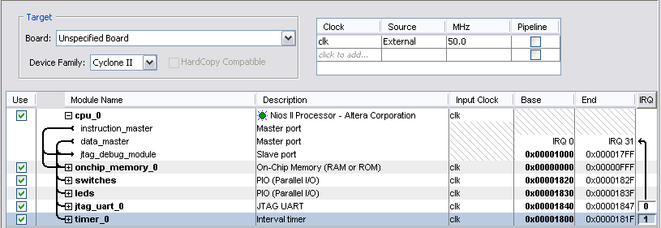

I used these examples to start teaching myself NiosII design. They are in the order I did them, rather than in a pedagogical order. There are many interesting tradoffs between hardware and software to be explored.
Using a hardware timer.
Each specific NiosII processor has different characteristics, so when talking about an assembler program, you also have to specifiy the specific NiosII that it runs on. I generated a basic economy cpu (E type) with two 8-bit parallel ports and a timer. The configuration is shown below. It is very similar to the DE2 SOPC tutorial version. To write assembler code, you need to notice the i/o addresses for each port and for the timer. Notice also that the timer uses IRQ 1 which means that we need to set bit 1 in control register 3 to enable a timer interrupt. By double-clicking on the memory tab you can check the amount of memory created. This is useful for positioning a stack at the top of memory. In this case I generated 4k of memory.

If you open the More cpu options tab, you can get the memory location that the interrupt unit uses for exception code. In this case it is 0x0000020, which is the default.
The SOPC produces some verilog files which need to be combined with a top-level module and FPGA pin definitions using QuartusII. The top-level module in this case is very simple, but could contain arbitrary circuitry (see #2 below).
// Implements a simple Nios II system for the DE2 board.
// Inputs: SW7-0 are parallel port inputs to the Nios II system
// CLOCK_50 is the system clock
// KEY0 is the active-low system reset
// Outputs: LEDG7-0 are parallel port outputs from the Nios II system
module TimerTest(SW, KEY, CLOCK_50, LEDG);
input [7:0] SW;
input [0:0] KEY;
input CLOCK_50;
output [7:0] LEDG;
// Instantiate the Nios II system module generated by the SOPC Builder:
// nios_system (clk, reset_n, out_port_from_the_LEDs, in_port_to_the_Switches)
NiosII niosIItimer(CLOCK_50, KEY[0], LEDG, SW);
endmodule
The output of the QuartusII compilation is an .sof file to be downloaded to the DE2 Using QuartusII, and a .ptf file to be used by the NiosII debug client. The ptf file describes the custom cpu to the debugger client. At this point we have built the hardware. Now we need a program to run on it. A simple assembler program transfers the position of 8 switches to 8 LEDs, and once a second inverts the LEDs. The timing is done using the hardware timer module described in the SOPC builder. There are several things to notice in the code:
TO) has to be cleared manually in the ISR. PIE) in the cpu status register (control register 0). There are 32 individual interrupt enable bits for each different interrupt in the ienable control register. There is an interrupt enable on the specific hardware, in this case the timer ITO bit. 0x00) and the exception entry (0x20). The exception entry is located at 0x20 in order to put it on the second cache line (if there is a cache). r29) must be decremented by 4 before issuing the return-from-exception (eret), only if the exception is an interrupt (but not if it a software trap). See the NiosII Processor Reference Handbook. push and pop macros were defined to make interrupt handling more general. You must set up the stack if you use push or pop. An general interrupt handler should check for multiple interrupt sources and prioritize them. 0x00010000 should produce a frequency of clk/period/2 or 5e6/2^16/2=381.5 Hz. The division by 2 is because two periods is equal to one cycle when the output is toggled on each period. My scope shows 381.4 Hz, which is within the accuracy of the scope itself. Setting the period to 0x00000100 should produce 97. 66 kHz and actually produces 98.0 kHz, as close as I can read. However there is about 0.6 microseconds of jitter in the period. Reducing the period to the minimum which will work, 0x00000070, suggests that the interrupt service routine (plus entry overhead) takes about 110 cycles to complete. If you open the SOPC with this design, you will find that I used the low-performance NiosII cpu (e version), which is multicycle. The image below shows the trace with a period of 0x00000100. 0x0030 gives a frequency of 515 kHz against the calculated 521 kHz. The timer is accurate to at least 4 places (the limit of my scope) at lower frequencies. The minimum relable timer period is about 32 cpu cycles. The timer ISR has 10 instructions (movia, push, and pop are two-instruction macros). It probably takes two or three cycles to get in and out of the ISR (storing ea, status, etc), so I am guessing about 2 cycles/instruction. This is consistent with Altera performance numbers. .sof file to be downloaded to the DE2 Using QuartusII, and a .ptf file to be loaded into the Debug Client.References
JO Hamblen, TS Hall and MD Furman, Rapid protoyping of digital systems, Springer 2005
Altera NiosII instruction set reference
Altera NiosII exception handling
Copyright Cornell University June 2006
{kind=link}